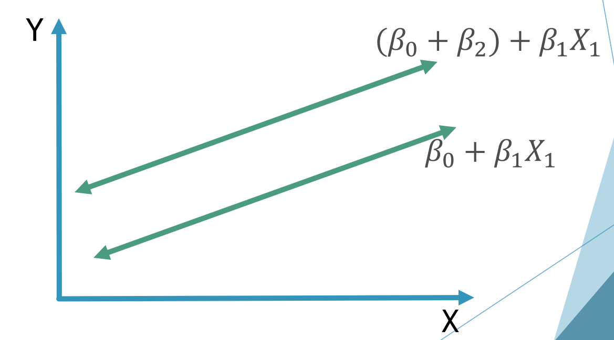
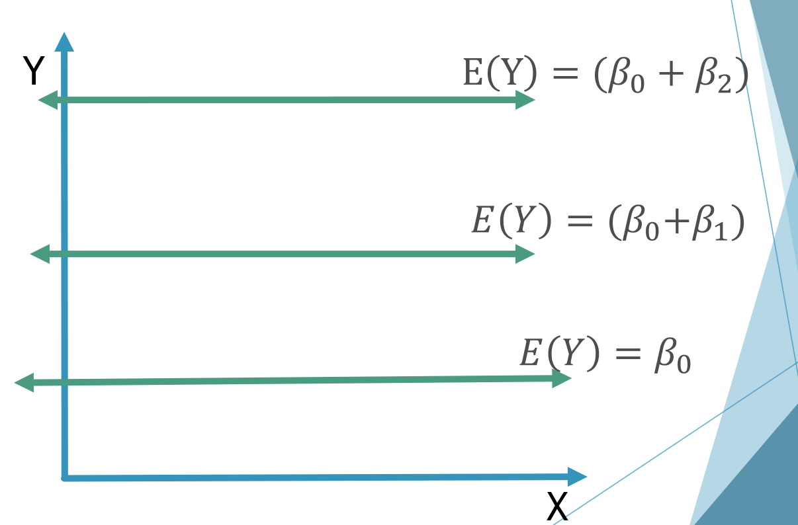
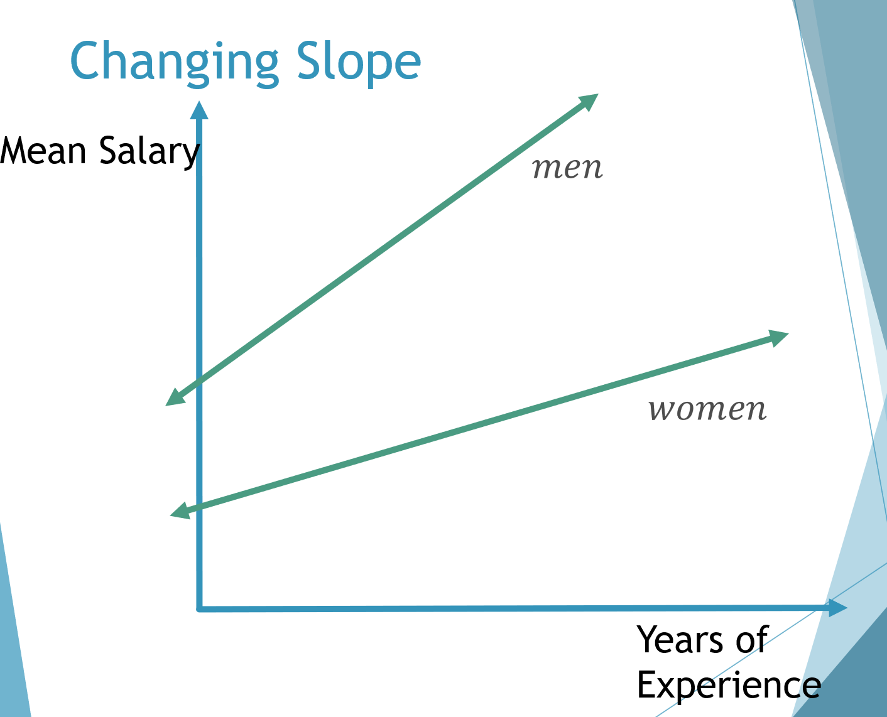

Models with Qualitative variables¶
Qualitative variables are variables that cannot be measured numerically. These variables are often called categorical because they have different categories. i.e. gender, eye color, marital status
Multiple regression requires that the response Y be a quantitative variable (measured numerically). Independent variables can be either quantitative or qualitative. Qualitative variables are entered into a regression model through the use of dummy variables (or indicator variables).
Using Indicator variables¶
If a qualitative variable involves r categories, or levels, then (r – 1) indicator variables should be added to the regression model.
Example
Data was collected on 12 assistant professors (6 male and 6 female). Their salaries, years of experience, and gender were recorded. We wish to create a model to predict salary based on experience and gender.
Y = Salary
X_1 = Years of Experience
Need to create dummy variables for gender.
Gender has two categories, thus we need (2 – 1) = 1 dummy variable.
Z1 = {(1, 𝑚𝑎𝑙𝑒 | 0, 𝑓𝑒𝑚𝑎𝑙𝑒)}
Our model can now be written as:
Expected Value of Y:
For males:
For females:
Example - Two Categories
A model with categorical variables essentially involves a change in the intercept as we change from one category to another.
{kind=link}
Example – Three Categories
An employer plans to use a multiple regression model to predict annual sales (in $1000) for members of her sales staff. She wants to include a categorical variable to indicate an individual’s highest level of education. The possible categories are: high school degree, some college, college degree.
Indicator Variables: Since we have 3 categories we need 2 indicator variables.
Z1 = {(1, 𝑠𝑜𝑚𝑒 𝑐𝑜𝑙𝑙𝑒𝑔𝑒 | 0, 𝑜𝑡ℎ𝑒𝑟𝑤𝑖𝑠𝑒)}
Z2 = {(1, 𝑐𝑜𝑙𝑙𝑒𝑔𝑒 𝑑𝑒𝑔𝑟𝑒𝑒 | 0, 𝑜𝑡ℎ𝑒𝑟𝑤𝑖𝑠𝑒)}
Another way to visualise this relationship is with a table
Cat |
Z_1 |
Z_2 |
|---|---|---|
Highschool Degree |
0 |
0 |
Some college |
1 |
0 |
College Degree |
0 |
1 |
If there are no other variables, our model would be:
The change in the intercept is seen below
{kind=link}
Suppose regression results show a coefficient of 8.2 for Z1 and 12.7 for Z2. How can we interpret these estimated coefficient values?
The category “high school degree” has both of the indicator variables take on a value of zero. This means that high school degree serves as a base to which the other categories can be compared.
For high school degree:
For some college:
The difference between having “some college” and having “high school degree” is (b0 + b1) – b0 = b1
In our example b1 = 8.2
We can associate having “some college” with an added $8,200 in annual sales when compared to having only a “high school degree”
(This is only based on sample data and our results are only estimates)
For college degree:
The difference between having “college degree” and having “high school degree” is (b0 + b2) – b0 = b2 = 12.7 We can associate having a “college degree” with an added $12,700 in annual sales when compared to having only a “high school degree”
The difference between having “college degree” and having “some college” is
(b0 + b2) – (b0 + b1) = (b2 – b1)
= 12.7 – 8.2
= 4.5
We can associate having a “college degree” with an added $4,500 in annual sales when compared to having only “some college”
Varying Slope with Indicator Categories¶
The way we created our model with categorical variables is by simply adding them in as another factor. This suggests that the slopes are constant across categories. This is not always going to be the case. We can account for the possibility of varying slopes by including the product (or interaction) terms between indicator terms and continuous variables.
Let’s look at the example dealing with professor’s salary.
Previously our model was:
Where:
Y = Salary
X1 = Years of Experience
Z1 = 1 for males; 0 for females
If we think the slope could be different for males and females we would add the interaction term: X1*Z1
Our model then becomes:
This interaction term allows the two independent variables to interact.
This allows the relationship between Salary and Years of Experience to behave differently for men and women.
When the faculty member is a woman:
This is a straight line with slope = 𝛽_1 and intercept = 𝛽_0
When the faculty member is a man:
This is a straight line with slope = (𝛽_1+𝛽_3) and intercept = (𝛽_0+𝛽_2)
{kind=link}
Test For Parallelism¶
We can test for the condition of parallelism by testing if the interaction term is significant in the model. If the interaction term is not significant, the slopes would be the same for all of the categories (the lines would be parallel).
In the previous example the coefficient of the interaction term was 𝛽_3, so our test for parallelism would be:
H0: \(𝛽_3\) = 0 (slopes are the same)
Ha: \(𝛽_3\) ≠ 0 (slopes are different)
Test statistic: \(T = \frac{𝑏_3}{(𝑆𝐸(𝑏_3))}\)
Critical value: 𝑡_(𝛼/2) (with v = n – k – 1)
If we reject H0, we conclude that there is evidence that the interaction term is significant in the model. (There is evidence that the slopes are different).
The Partial F Test¶
Given a model with 3 or more independent variables, we can test if portions of the model are significant (when taken together).
For example, given the model:
We can test if X_3 and X_4 are significant to the model when taken together.
Testing if X_3 and X_4 are significant to the model when taken together is not the same as testing each variable individually with a T-test.
What we are trying to test is:
\(H0 : β_3 = β_4 = 0\)
\(H_a\) : at least one \(β_i ≠ 0\)
This test will be similar to the F-test because we are trying to test more than one variable at a time. We will call this the Partial F-test since we are only testing some of the parameters.
When testing a subset of variables we are essentially comparing two different models: Full model contains all of the independent variables. Reduced model does not have the variables that you are trying to test.
Example
We have created a model to predict Y using four independent variables ( \(X_1, X_2, X_3, X_4\) ). We want to test if X3 and X4 are significant to the model when taken together.
Full model:
Reduced Model:
We then run regressions on both models (full and reduced) to get the necessary information for the Partial F-test
To perform a partial F-test we calculate:
R signifies that the values are coming from the Reduced model.
F signifies Full model.
\(𝑘_𝐹−𝑘_𝑅\) = the number of betas being tested
We can reject \(H_0\) if \(F* > f_𝛼\)
With \(v_1 = (k_F – k_R) and v_2 = [n – (k_F + 1)]\) .
The numerator degrees of freedom is the number of betas being tested.
The denominator degrees of freedom is the degrees of freedom for error from the full model.
Conclusions¶
If we reject \(H_0\) then the variables are significant when taken together, and should not be removed from the model. (the full model should be used)
If we do not reject \(H_0\) then the variables are not significant when taken together and the variables tested can be removed from the model. (the reduced model should be used)
Example
A multiple linear regression was performed to fit a model with 8 independent variables.
The sample size is n = 25.
We believe variables X_2, X_3, X_6, and X_7 are not significant in the model when taken together.
Perform a partial F-test.
- Full Model
- Y = β_0 + β_1X_1 + β_2X_2 + β_3X_3 + β_4X_4 + β_5X_5
β_6X_6+ β_7X_7+ β_8X_8+ ε
ANOVA
Source |
DF |
SS |
MS |
F |
|---|---|---|---|---|
Regression |
8 |
528 |
66 |
4.14 |
ERROR |
16 |
255 |
15.9375 |
|
TOTAL |
24 |
783 |
Reduced model:
ANOVA
Source |
DF |
SS |
MS |
F |
|---|---|---|---|---|
Regression |
4 |
456 |
144 |
6.97 |
ERROR |
20 |
327 |
16.35 |
|
TOTAL |
24 |
783 |
\(H_0: 𝛽_2=𝛽_3=𝛽_6=𝛽_7=0\)
\(H_a:\) at least one \(𝛽_𝑖≠0\)
Critical value: \(f_{0.05} = 3.01 (v_1 = 4, v_2 = 16)\)
Reject H0 if F > 3.01
1.13 < 3.01
Do not reject \(H_0\) . There is not evidence that the selected variables are significant to the model when taken together. (The reduced model should be used)